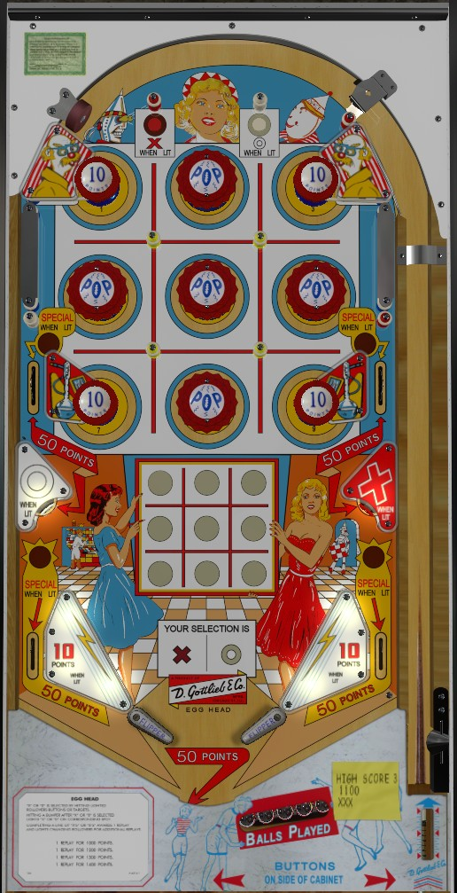

The main goal of Egg Head is to form a tic-tac-toe on the grid shown near the flippers. To place an X or O mark, first press one of the rollover buttons at the top of the game or the standup targets in the lower left and right. The top rollover buttons score 10 points, and the lower standups score 50. After selecting an X or O mark, the next bumper you hit will add the selected mark to the grid, unless there is already a mark in the grid corresponding to that bumper's position. The bumpers in the four corners of the grid are passive bumpers that always score 10 points, and the other bumpers are pop bumpers that always score 1. The middle left and right side lanes, out lanes, and the drain all score 50 points. If you have successfully made any tic-tac-toe (three in a line of the same mark), one instant Special is awarded, and either the middle side lanes or one out lane will be lit for Special. Special can only score a free game and moves based on 10-point switch hits. Slingshots are also lit for 10 points instead of 1 intermittently based on 10-point switch hits. Beware the very large flipper gap; there is no center post. Tilt ends game.
The below picture of Egg Head's playfield was taken from the VPX recreation by Loserman76.
